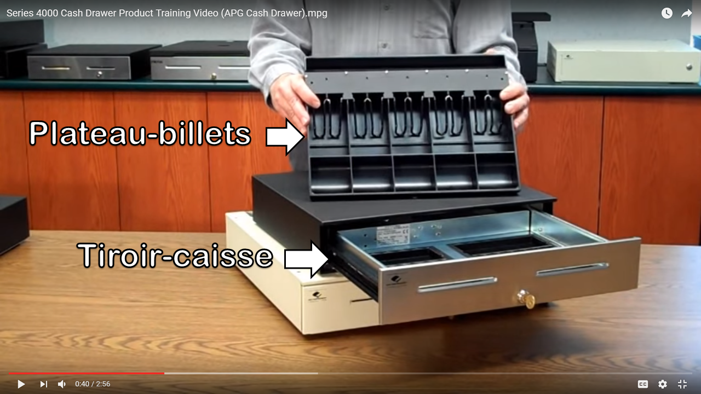

Le contexte est l’étude de cas du système POS NextGen, notamment le scénario principal du cas d’utilisation Ouvrir la caisse (anglais Cash In). C’est l’acte d’un caissier ou d’une caissière qui arrive avec son tiroir-caisse contenant déjà de l’argent, qui s’authentifie sur la caisse (le registre) et saisit le montant en espèces dans le tiroir-caisse.
En effet, ce cas d’utilisation n’est pas présenté en détail par Larman (2005), bien qu’il soit mentionné dans son livre dans un diagramme de cas d’utilisation. Alors, nous proposons pour cet exercice des modifications au modèle du domaine présenté par Larman à fin de modéliser cette fonctionnalité additionnelle du logiciel.
C.1 Terminologie
Quelques termes du domaine d’affaires doivent être compris avant de procéder :

- Tiroir-caisse
- C’est la partie de la caisse qui s’ouvre, dans laquelle on peut placer un plateau-billets.
- Plateau-billets
- C’est un conteneur pour les billets d’argent et des pièces de monnaie qui facilite le changement de personnel à une caisse. Chaque caissier ou caissière possède un plateau-billets et l’apporte lorsqu’il commence ou termine un quart de travail.
C.2 Cas d’utilisation : Ouvrir la caisse
Acteur principal : Caissier
Préconditions : La caisse est libre et son tiroir-caisse est vide (il n’y a pas de plateau dedans).
Garanties de succès (postconditions) : Le caissier ou la caissière est authentifiée. Son plateau-billets est placé dans le tiroir-caisse et son identificateur est enregistré. Le montant d’argent du plateau est enregistré. L’heure de l’arrivée du caissier est enregistrée.
Scénario principal (succès)
Le Caissier ou la caissière arrive à la caisse avec son plateau-billets.
Le Caissier ou la caissière saisit son identifiant et son mot de passe dans la boîte de dialogue d’authentification.
Le Système authentifie le Caissier ou la caissière.
Le Système ouvre le tiroir-caisse et demande au Caissier ou à la caissière de poser son plateau dans le tiroir-caisse.
Le Caissier ou la caissière pose son plateau dans le tiroir-caisse.
Le Système reconnaît l’identificateur du plateau.
Le Système demande au Caissier ou à la caissière de saisir le montant d’argent du plateau.
Le Caissier ou la caissière saisit le montant d’argent du plateau.
Le Système demande au Caissier ou à la caissière de fermer le tiroir-caisse.
Le Caissier ou la caissière ferme le tiroir-caisse.
Spécifications particulières :
Les caisses sont configurées avec un modèle de plateau-billets comme celui-ci : (voir exemple sur Youtube)
Fréquence d’occurrence : Normalement, au début du quart de travail de chaque caissier.
C.3 Modèle du domaine partiel
Voici un exemple pour le système POS NextGen. Noter les nouvelles classes conceptuelles PlateauBillets (un objet physique) et MisePlateau (une transaction) faisant partie du scénario d’Ouvrir la caisse.

On remarque que lorsqu’un Registre (Caisse) n’a pas de Caissier (l’état du système au début du cas d’utilisation), l’objet Registre n’est associé à aucun objet Caissier. Nous avons donc modifié les cardinalités de l’association en conséquence. C’est une différence par rapport au modèle du domaine de base présenté par Larman, qui n’avait pas considéré ce cas d’utilisation, bien qu’il est dans l’ensemble des spécifications du système.
Les associations en rouge sont celles qui sont affectées par la dynamique de ce cas d’utilisation.
C.4 Diagramme de séquence système (DSS)
La figure C.2 est le diagramme de séquence système (DSS) pour le scénario « Ouvrir la caisse ».
C.5 Contrats d’opération
Voici les contrats pour chaque opération système.
Opération : démarrerOuvrirCaisse()
Postconditions :
- Une instance mp de MisePlateau a été créée.
Opération : authentifier(identifiant : String, mdp : String)
Postconditions :
- mp a été associé à un Caissier, sur la base de correspondance avec identifiant.
- Le Registre en cours a été associé à un Caissier, sur la base de correspondance avec identifiant.
Opération : poserPlateau(identifiant : String)
Postconditions
- mp a été associé à un PlateauBillets, sur la base de correspondance avec identifiant.
- Le Registre en cours a été associé à un PlateauBillets, sur la base de correspondance avec identifiant.
Opération : saisirMontant(montant : Monnaie)
Postconditions
- mp.montant est devenu montant.
Opération : fermerTiroir()
Postconditions :
- mp.dateHeure est devenue la date et l’heure actuelle.
- mp a été associé à GrandLivre.
- mp a été associé à Registre.